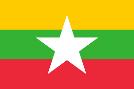

Flag of Myanmar
The Republic of Union of Myanmar
イギリスから独立した1948年から1989年までの国名はビルマ連邦、通称ビルマ。東南アジア諸国連合（ASEAN）加盟国
地図

イギリスから独立した1948年から1989年までの国名はビルマ連邦、通称ビルマ。東南アジア諸国連合（ASEAN）加盟国
ミャンマーの首都と旧首都
**現在の首都：ネピドー（Naypyidaw / ネーピードー）**
* **設立：** 2005年に正式に発表されました。
* **場所：** 国の中央部に位置し、旧首都ヤンゴンの北約320kmにあります。
* **特徴：** 計画都市として建設され、広い道路、政府機関の建物、大規模な施設が整備されています。政治・行政の中心地です。
* **意味：** 「王の居城」または「王都」という意味があります。
**旧首都：ヤンゴン（Yangon / ラングーン）**
* **役割：** 1948年の独立から2005年までの首都。現在も最大の都市であり、経済・商業・文化の中心地です。
* **特徴：** 植民地時代の建築物が多く残っており、シュエダゴン・パゴダなどの歴史的な名所があります。
* **人口：** ミャンマーで最も人口の多い都市で、国内外のビジネスの中心でもあります。
ミャンマーの人口、民族、使用言語について 人口： ミャンマーの人口は約5,500万人（2024年時点の推定）です。東南アジアの国の中でも比較的大きな人口を持つ国であり、多くの民族が共存しています。 民族（国民の諸民族）： 多民族国家で、人口の6割をビルマ族が占め、ビルマ語が公用語である。ほかにロヒンギャ、カレン族、カチン族、カヤー族、ラカイン族、チン族、モン族、シャン族、北東部に中国系のコーカン族[15]などの少数民族がおり、独自の言語を持つ民族も多く、中国人やインド人もいる。（言語参照） 宗教は住民の大半（85 %）が上座部仏教を信仰し、他にヒンドゥー教などがある。 使用言語： 公用語： ミャンマー語（ビルマ語）が公用語であり、教育や政府の公的文書、メディアなどで広く使用されています。 少数民族の言語： 各民族は自分たちの母語も日常的に使用しており、カレン語、シャン語、カチン語、チン語など、多言語社会となっています。 教育や都市部では英語もある程度使用されており、とくにビジネスや高等教育の場で重要な役割を果たしています。

 シュエダゴン・パゴダは、ミャンマーの旧首都ヤンゴンにある、国内で最も有名で神聖とされる仏塔です。高さ約99メートルの金色の仏塔は、ヤンゴン市内の高台、シングッタラの丘の上に建てられており、遠くからでもその姿がはっきりと見えます。伝説によれば、約2,600年前に建てられたとされ、仏陀の聖髪（せいはつ）が納められていると伝えられています。
パゴダ全体は金箔で覆われており、ミャンマー中の信者たちから寄進された金が使われています。頂上部分にはダイヤモンドやルビーなどの宝石も装飾されており、特に朝日や夕日に照らされた姿は壮麗で、訪れる人々を魅了します。シュエダゴン・パゴダは、宗教的・文化的に極めて重要な存在であり、ミャンマー仏教徒の信仰の象徴です。
シュエダゴン・パゴダは、ミャンマーの旧首都ヤンゴンにある、国内で最も有名で神聖とされる仏塔です。高さ約99メートルの金色の仏塔は、ヤンゴン市内の高台、シングッタラの丘の上に建てられており、遠くからでもその姿がはっきりと見えます。伝説によれば、約2,600年前に建てられたとされ、仏陀の聖髪（せいはつ）が納められていると伝えられています。
パゴダ全体は金箔で覆われており、ミャンマー中の信者たちから寄進された金が使われています。頂上部分にはダイヤモンドやルビーなどの宝石も装飾されており、特に朝日や夕日に照らされた姿は壮麗で、訪れる人々を魅了します。シュエダゴン・パゴダは、宗教的・文化的に極めて重要な存在であり、ミャンマー仏教徒の信仰の象徴です。
 インレー湖（Inle
Lake）は、ミャンマー東部のシャン州に位置する美しい淡水湖で、標高約900メートルの高地に広がっています。湖の長さは約22キロメートル、幅は約10キロメートルで、ミャンマー有数の観光地として知られています。湖の上にはインダー族をはじめとする少数民族の人々が住み、水上家屋や浮き畑など独特な生活様式を営んでいます。
特に有名なのは、片足で櫂を操る伝統的な漁師の姿で、湖の象徴的な光景となっています。さらに、パウンドーウー・パゴダやジャンタウ僧院などの文化的名所も多く、観光客に人気です。市場や工芸品（蓮織物、葉巻など）も魅力のひとつです。自然の美しさと伝統文化が調和した、インレー湖はミャンマーを代表する観光スポットの一つです。
---
他にもミャンマーの観光地について知りたいですか？
インレー湖（Inle
Lake）は、ミャンマー東部のシャン州に位置する美しい淡水湖で、標高約900メートルの高地に広がっています。湖の長さは約22キロメートル、幅は約10キロメートルで、ミャンマー有数の観光地として知られています。湖の上にはインダー族をはじめとする少数民族の人々が住み、水上家屋や浮き畑など独特な生活様式を営んでいます。
特に有名なのは、片足で櫂を操る伝統的な漁師の姿で、湖の象徴的な光景となっています。さらに、パウンドーウー・パゴダやジャンタウ僧院などの文化的名所も多く、観光客に人気です。市場や工芸品（蓮織物、葉巻など）も魅力のひとつです。自然の美しさと伝統文化が調和した、インレー湖はミャンマーを代表する観光スポットの一つです。
---
他にもミャンマーの観光地について知りたいですか？
 モウンヒンガーは、ミャンマーを代表する朝食料理で、米麺にナマズの魚スープをかけて食べる麺料理です。スープはレモングラス、にんにく、玉ねぎ、魚、魚醤などを使って煮込まれ、香り豊かで少しスパイシー。揚げた豆、ゆで卵、香草、唐辛子をトッピングして食べます。
モウンヒンガーは、ミャンマーを代表する朝食料理で、米麺にナマズの魚スープをかけて食べる麺料理です。スープはレモングラス、にんにく、玉ねぎ、魚、魚醤などを使って煮込まれ、香り豊かで少しスパイシー。揚げた豆、ゆで卵、香草、唐辛子をトッピングして食べます。
 モウンロウンイェーボーは、ミャンマーの伝統的な甘い団子です。特に年末年始によく食べられています。もち米粉で作った生地に、刻んだパームシュガーとココナッツを包み、熱湯で茹でて団子が浮かんできたら完成。仕上げに少し塩を加えた温かいココナッツミルクをかけていただきます。もちもちとした食感と、ココナッツの風味が特徴です。
モウンロウンイェーボーは、ミャンマーの伝統的な甘い団子です。特に年末年始によく食べられています。もち米粉で作った生地に、刻んだパームシュガーとココナッツを包み、熱湯で茹でて団子が浮かんできたら完成。仕上げに少し塩を加えた温かいココナッツミルクをかけていただきます。もちもちとした食感と、ココナッツの風味が特徴です。